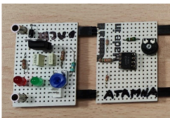
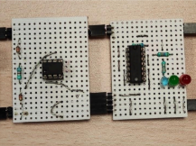
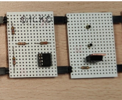
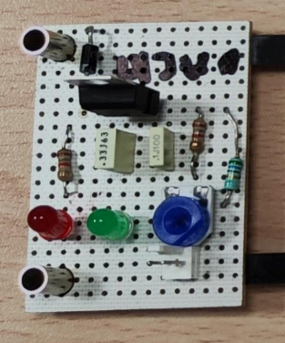

Les fondamentaux du Génie Électrique : analyse fonctionnelle, conception de circuits imprimés, soudure, programmation Arduino, automatisme et énergie. Cinq SAÉ qui posent les bases du métier d'électronicien.
Concevoir un multimètre fonctionnel capable de mesurer courants, résistances et tensions. Le projet a démarré par une partie théorique (tables de vérité, tableaux de Karnaugh, pont diviseur de tension, calculs de résistance), suivie du routage du circuit imprimé sur Tinkercad.
Vint ensuite la pratique : soudure des composants puis tests de fonctionnement. Enfin, un programme Arduino répondant au cahier des charges — calibres automatiques pour chaque échelle, LED indiquant le mode (Ampèremètre / Voltmètre / Ohmmètre) et affichage des mesures sur l'afficheur 4 digits 7 segments.
Concevoir un système de régulation de température chauffant un bloc d'aluminium et maintenant sa température entre deux seuils. Après une phase théorique et des simulations Tinkercad, place à la soudure et aux tests sur banc d'essai.
Le régulateur final fonctionne en tout-ou-rien : chauffage activé sous 62 °C, désactivé au-dessus de 72 °C. Une LED clignote pendant la chauffe (2 Hz, rapport cyclique 0,7) et trois LEDs indiquent à l'utilisateur si le bloc est trop froid, dans la plage souhaitée ou trop chaud.

// carte_01

// carte_02

// carte_03

// carte_04// schéma / compte-rendu
Concevoir · AC11.01 / AC11.02Vérifier · AC12.01 Procédure d'essais (tests de cartes & continuité des soudures)
XS201 · SAÉ 2.01⏱ 3 semaines · trinôme
Robot Suiveur de Ligne
Concevoir un robot suiveur de ligne capable de suivre une ligne noire sur fond blanc, de gérer les intersections et de détecter/suivre les murs. En trinôme, répartition par capteur : photo-réflectifs, capteurs de distance, et — pour ma part — la caméra Pixy.
Après un prototypage sur plaques à pastilles, nous avons routé sous KiCad quatre circuits imprimés : une carte Shield (capteurs + Arduino Nano), une carte pour les 5 capteurs photo-réflectifs centraux, et deux cartes latérales pour détecter les marques de virage. La réussite a reposé sur la communication d'équipe et la mise en commun des trois capteurs.
Deux SAÉ d'une semaine chacune. Côté énergie : câblage d'une armoire électrique, tests de continuité, consignations et VAT, raccordement à une partie opérative simulant un tri de pièces (vérins pneumatiques, capteurs, plateau tournant), avec port des EPI pour les tests sous tension.
Côté automatisme : pilotage d'une station de traitements multiples avec four (tirée au sort). Familiarisation avec les composants (capteurs photo-réceptifs, fins de course, moteurs bidirectionnels, vérins), puis programmation en GRAFCET pour cuire, scier et transférer des pièces cylindriques entre four, plateau rotatif et bande transporteuse.
Conception d'un Shield Arduino et apprentissage de la soudure propre à l'étain. Associé à un Arduino Nano, le shield a permis de tester LEDs, potentiomètres, boutons poussoirs et capteur CTN.
Une série de TP a suivi : animations de LEDs pilotées par boutons (couleurs) et potentiomètres (vitesse d'un chenillard), maîtrise de l'afficheur 7 segments 4 digits, et pour finir l'utilisation du capteur à ultrasons HC-SR04 affichant une distance d'obstacle sur le moniteur série.


.jpg)